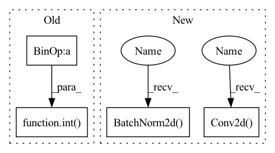

Pattern ID :1009
Before Change
else:
self.global_avgpool = nn.AdaptiveAvgPool2d(1)
self.conv1 = nn.Conv2d(inplanes, int(inplanes / squeeze_ratio), kernel_size=1, stride=1)
self.conv2 = nn.Conv2d(int( inplanes / squeeze_ratio) , inplanes, kernel_size=1, stride=1)
self.relu = make_activation(activation)
self.sigmoid = nn.Sigmoid()
After Change
class DepthwiseSeparableConv(nn.Module):
def __init__(self, in_planes, out_planes, kernel_size, padding, bias=False):
super(DepthwiseSeparableConv, self).__init__()
self.depthwise = nn.Conv2d( in_planes, in_planes, kernel_size=kernel_size, padding=padding, groups=in_planes,
bias=bias)
self.pointwise = nn.Conv2d(in_planes, out_planes, kernel_size=1, bias=bias)
self.bn1 = nn.BatchNorm2d(in_planes)
self.bn2 = nn.BatchNorm2d( out_planes)
self.relu = nn.ReLU()
def forward(self, x):
x = self.depthwise(x)In pattern: SUPERPATTERN
Frequency: 3
Non-data size: 4
Instances Fragment ID: 3207248
Project Name: opendr-eu/opendr
Commit Name: 18da6a5d3ed5c2a291cb9c600a9fe4e5e17e5671
Time: 2021-01-26
Author: ptosidis@gmail.com
File Name: src/perception/face_recognition/algorithm/backbone/model_mobilenet.py
M Class Name: SELayer
N Class Name: DepthwiseSeparableConv
M Method Name: __init__(6)
N Method Name: __init__(5)
M Parent Class: nn.Module
N Parent Class: nn.Module
M File Name: src/perception/face_recognition/algorithm/backbone/model_mobilenet.py
N File Name: src/perception/face_recognition/algorithm/backbone/model_mobilenet.py
M Start Line: 153
M End Line: 162
N Start Line: 35
N End Line: 42
Before Change
super(Bottleneck, self).__init__()
if norm_layer is None:
norm_layer = nn.BatchNorm2d
width = int( planes * (base_width / 64.)) * groups
// Both self.conv2 and self.downsample layers downsample the input when stride != 1
self.conv1 = conv1x1(inplanes, width)
self.bn1 = norm_layer(width)After Change
D = cardinality * int(base_width * width_ratio)
self.conv_reduce = nn.Conv2d(
in_channels, D, kernel_size=1, stride=1, padding=0, bias=False)
self.bn_reduce = nn.BatchNorm2d( D, momentum=0.001)
self.conv_conv = nn.Conv2d(D, D,
kernel_size=3, stride=stride, padding=1,
groups=cardinality, bias=False)
self.bn = nn.BatchNorm2d(D, momentum=0.001)
self.act = mish
self.conv_expand = nn.Conv2d(
D, out_channels, kernel_size=1, stride=1, padding=0, bias=False)
self.bn_expand = nn.BatchNorm2d(out_channels, momentum=0.001)
self.shortcut = nn.Sequential()
if in_channels != out_channels: Fragment ID: 3207250
Project Name: ygzwqzd/lamda-ssl
Commit Name: 360768e49da2ff10157493a976817acc85f1ccd5
Time: 2022-01-17
Author: 1129198222@qq.com
File Name: Semi_sklearn/Network/ResNet.py
M Class Name: Bottleneck
N Class Name: ResNeXtBottleneck
M Method Name: __init__(7)
N Method Name: __init__(9)
M Parent Class: nn.Module
N Parent Class: nn.Module
M File Name: Semi_sklearn/Network/ResNet.py
N File Name: Semi_sklearn/Network/ResNet.py
M Start Line: 76
M End Line: 99
N Start Line: 31
N End Line: 68
Before Change
self.global_avgpool = nn.AvgPool2d(size)
else:
self.global_avgpool = nn.AdaptiveAvgPool2d(1)
self.conv1 = nn.Conv2d(inplanes, int( inplanes / squeeze_ratio) , kernel_size=1, stride=1)
self.conv2 = nn.Conv2d(int(inplanes / squeeze_ratio), inplanes, kernel_size=1, stride=1)
self.relu = make_activation(activation)
self.sigmoid = nn.Sigmoid()After Change
class DepthwiseSeparableConv(nn.Module):
def __init__(self, in_planes, out_planes, kernel_size, padding, bias=False):
super(DepthwiseSeparableConv, self).__init__()
self.depthwise = nn.Conv2d( in_planes, in_planes, kernel_size=kernel_size, padding=padding, groups=in_planes,
bias=bias)
self.pointwise = nn.Conv2d(in_planes, out_planes, kernel_size=1, bias=bias)
self.bn1 = nn.BatchNorm2d(in_planes)
self.bn2 = nn.BatchNorm2d( out_planes)
self.relu = nn.ReLU()
def forward(self, x):
x = self.depthwise(x) Fragment ID: 3207238
Project Name: opendr-eu/opendr
Commit Name: 18da6a5d3ed5c2a291cb9c600a9fe4e5e17e5671
Time: 2021-01-26
Author: ptosidis@gmail.com
File Name: src/perception/face_recognition/algorithm/backbone/model_mobilenet.py
M Class Name: SELayer
N Class Name: DepthwiseSeparableConv
M Method Name: __init__(6)
N Method Name: __init__(5)
M Parent Class: nn.Module
N Parent Class: nn.Module
M File Name: src/perception/face_recognition/algorithm/backbone/model_mobilenet.py
N File Name: src/perception/face_recognition/algorithm/backbone/model_mobilenet.py
M Start Line: 153
M End Line: 162
N Start Line: 35
N End Line: 42
Before Change
))
input_channel = output_channel
for t, c, n, s in setting:
output_channel = int( c * width_mult)
for i in range(n):
self.features.append(InvertedResidual(input_channel, output_channel, s, expand_ratio=t))
input_channel = output_channel
self.features.append(conv_1x1_bn(input_channel, last_channel))After Change
nn.ReLU6(inplace=True),
// pw-linear
nn.Conv2d(input_channel, output_channel * t_free, 1, 1, 0, bias=False),
nn.BatchNorm2d( output_channel * t_free) ,
)
)
input_channel = output_channel
for t, output_channel, n, s in setting:
for i in range(n):
self.features.append(InvertedResidual(input_channel, output_channel, s, expand_ratio=t,free=t_free))
input_channel = output_channel
self.features.append(
nn.Sequential(
nn.Conv2d( input_channel * t_free, last_channel, 1, 1, 0, bias=False) ,
nn.BatchNorm2d(last_channel),
nn.ReLU6(inplace=True)
) Fragment ID: 3207262
Project Name: fxmeng/rmnet
Commit Name: fc5f0bab48cf43723d58ad7e34ac2fe4f4ec82d7
Time: 2022-01-05
Author: 60565778+fxmeng@users.noreply.github.com
File Name: models/rmobilenet.py
M Class Name: RMobileNet
N Class Name: RMobileNet
M Method Name: __init__(7)
N Method Name: __init__(7)
M Parent Class: nn.Module
N Parent Class: nn.Module
M File Name: models/rmobilenet.py
N File Name: models/rmobilenet.py
M Start Line: 136
M End Line: 154
N Start Line: 122
N End Line: 152